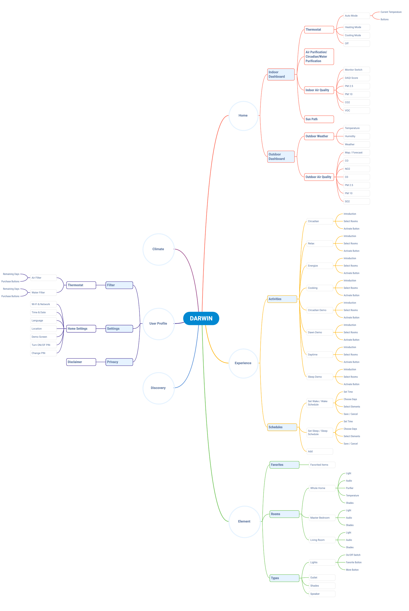
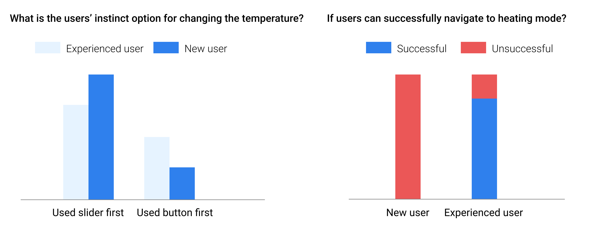

2017 - present
 2019 BEST Product
2019 BEST Product
Award @CEDIA Expo 2019
Featured in Forbes
Bruce Goodman
Maria Tanova
Katie Depue
Sarang Yang
Sophia
User Flow
Wireframe
Prototype
User Interview
User Survey
Testing Platform
UX Strategy
Market Insight
UX Lead
DARWIN provides holistic & responsive intelligence to promote wellness through connected hardwares and behavioral interventions. It mitigates the environmental factors that can impact people's health, happiness, and well-being.
The initial DARWIN was designed based on science and experts’ judgments, not on users’ needs. We were confident that DARWIN can help optimize users’ health and well-being, but we were not sure if people can
01. constantly engage with the system,
02. easily tailor their home to their families’ specific needs, and
03. understand how the wellness of their families are being improved over time.
1000+ responses to user survey were collected. People overwhelmingly believed that their home can impact their health and well-being.
Air quality, environmental remediation, and sleep are the top 3 features people are most excited about.


Based on the insights from the market survey and sale notes, we identified and empathized with a user (Linda) and her pain point, rapidly innovated on ways to improve the user's experience.
All stakeholders voted to identify the key pain points of Linda and discussed the opportunities for improvement.

Pairing takes too long
No way to see benifits
Not interactive
Hub fall offline frequently
Hard to navigate
...
Set up Passive Experiences Linda can tailor her home to her family’s specific needs in less than 5 minutes. Linda and her family can have peace of mind that their home environment is continually being optimized for their specific sleep and stress levels without breaking the bank.
Nudging / Coaching Experience / Reports In real time, Linda and her family can learn how to adjust their behavior to optimize their health and well-being as needed. At a glance, Linda can understand how the wellness of her family is improving over time.
The existing grid system is a mess. The user flow is problematic.
We critiqued the current UI. All the existing components are studied and adjusted to a 4/8 point grid.

We mapped out all the components and their relationships, went through different use cases.
Filter Replacement is under User Profile section?
Air purification, Circadian is not clickable on homepage?
The control panel of the thermostat is not aligned with the hardware?
...
The thermostat in DARWIN home has 3 different mode: Cooling, Heating and Auto. The original thermostat control panel was not designed for the smart thermostat.
During the interview, I realize that even experienced users had trouble distinguishing cooling/heating mode with setting cooling/heating set point.
Users' Major Confusions:
Heating and setting cooling setpoint
Control slider and control button
Where to change the mode
Instead of using a down arrow for users to change mode, a mode picker was used to give user more indication about the 3 modes. All of the users like the new design, and satisfied about its learnability and the ease of use.
The goal of the design is to make user feels "in control” of their connected home ecosystem. At the same time, DARWIN should enable users to learn about the air filter(s) they have in their home and what action(s) they need to take to maintain the filters in their home. Furthermore, DARWIN should help users understand their purchase decisions on the e-commerce website.
The HEPA filter in DARWIN system contains 3 major parts and their lifespans vary:
Display the filter with Skeuomorphic visualization. Maping the digital element to the physical object in order to provide user more information, and help them feel more confident identify the part needs to be washed or replaced.

Display the filter status with a classical meter visualization. The visualization is better alaigned with the existing elements on the dashboard.
Work Algorithm
Account Management
DARWIN Monthly Report
Data Dashboard
Multiple UX research methods were used to improve the usability of the design. Methods include cognitive walkthrough, user interview, survey, A/B test, Beta testing(internal, friends & family program), etc.
DARWIN X, a testing platform was developed to deploy innovative features on the product roadmap and test the accuracy of the algorithm. It was also expanded from one flagship site into 20+ homes across the country, facilitating the user interviews and survey to test users' interaction with both hardware and software. The DARWIN X laid a solid foundation of the Alpha and Beta Test.